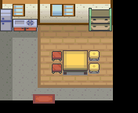
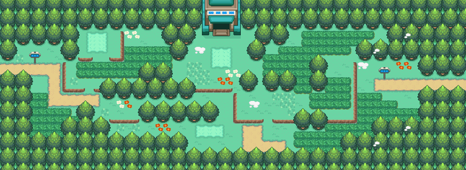

029 可爱的姆克儿
一句话目标：捕捉一只姆克儿，带回去给桔梗市西侧民居里的小女孩摸一摸。
接取地点
- 桔梗市西侧民居（地图 46:2），屋内 (6,2) 的小女孩（
local_id 1，她称玩家为“前辈”）。 - 当前目录描述：捕捉一只姆克儿，并把它给桔梗市的小女孩摸一摸。
准备条件
- 前置旗标 4246（入口脚本先检查，具体剧情点未解释）。
- 一只姆克儿（449），留在同行队伍里。
操作步骤
- 进入桔梗市西侧的民居 (46:2)，与屋里 (6,2) 的小女孩（
local_id 1）对话。她说“来自神奥地区的姆克儿，看着就很治愈！摸起来一定很舒服的！……前辈愿意帮帮我吗？”。 - 答应后出现“接受任务:<可爱的姆克儿>”，她说“姆克儿的事，就拜托前辈啦！”。
- 捕捉一只姆克儿（449）。可在 29 号道路（3:79） 白天草丛等地遇到，桐树林（1:121）、自然公园（1:124） 也有分布（34 号道路另有周四广播槽）。
- 带姆克儿回民居找她，她问“前辈，姆克儿的事怎么样了？”，随后展示姆克儿的图像：“这就是姆克儿吗？小小的……香香的……嘿嘿……我的姆克儿……简直就和我的小草莓一样可爱嘛！”。
- 她让你碰碰/摸摸它，最后决定“不要！果然还是看看就满足了呢，它不像我的小草莓一样温顺呀……”，随后给出报酬并完成任务（姆克儿留在你的队伍，不会被拿走）。
交付检查
- 同行队伍中携带姆克儿（449）。带来别的宝可梦会得到“不对，这不是姆克儿吧？”；队伍状态不满足时只会听到“加油啊，寻找姆克儿的前辈！”。
奖励
- 肌力之羽 ×10
- 经验糖果XS ×3
- 3000 元
- 2 BracerPoints
容易卡住的位置
- 需姆克儿本体，不是它的进化型。
- 民居在桔梗市西侧，入口是市区 (3,7) 附近的房门。
- 完成后她改口只聊自己的波波“小草莓”，别指望再触发交付。
来源与待补
- 包：
data/quest_packets/029.json；入口脚本0x08F50806（map 46:2 / local_id 1）；接取/交付脚本0x089E7E35、0x089E7E8F、0x089E7EBE、0x089E7E56、0x08AE321D、0x08AE399F、0x089E7F6B、0x08AE33E1、0x089E7FBE。 - 相关宝可梦：姆克儿；相关道具：肌力之羽、经验糖果XS。
- 未定位：前置旗标 4246 的具体剧情条件；姆克儿的推荐捕捉地仅按野外遭遇表列出，包内未指定唯一地点。
地点地图
共享RGB底图；点击可缩放定位。数字对应本页相关地点，不代表地图上全部事件。
桔梗市

1 可爱的姆克儿（6,2）
29号道路

地图范围记录：当前资料没有精确人物／遭遇坐标。
自然公园

地图范围记录：当前资料没有精确人物／遭遇坐标。
桐树林


地图范围记录：当前资料没有精确人物／遭遇坐标。